Letzter Ausweg
Inhaltsverzeichnis
- Templates (Schablonen)
- Forcing Chain (Zwangskette)
- Forcing Net (Zwangsnetz)
- Kraken Fish (Kraken)
- Brute Force (Rohe Gewalt)
Templates (Schablonen)
Templates sind eine Einzelziffer-Muster-Strategie. In einem leeren Sudoku-Gitter gibt es genau 46656 verschiedene Möglichkeiten, alle 9 Instanzen einer Ziffer im Gitter zu platzieren. Jedes Mal, wenn eine Instanz dieser Ziffer tatsächlich gesetzt wird, werden alle Schablonen ungültig, die diese Ziffer an dieser Stelle nicht enthalten. Jedes Mal, wenn eine andere Ziffer gesetzt wird, werden alle Schablonen ungültig, die die Ziffer an dieser Stelle enthalten. Hat man alle möglichen Templates berechnet, kann die Ziffer aus allen Zellen eliminiert werden, die nicht noch in mindestens einem Template gesetzt sind, und sie kann in allen Zellen gesetzt werden, die in allen verbleibenden Templates gesetzt sind.
Die Beschreibung sollte bereits klar gemacht haben, dass Templates nicht für menschliche Spieler gedacht sind. Sie lassen sich jedoch als Indikatoren verwenden: Wenn keine Template-Eliminierungen möglich sind, können keine Einzelziffer-Muster Spielzüge gefunden werden (man kann sich dann z.B. eine Fischsuche komplett sparen). Die andere Richtung ist nicht unbedingt gültig.
Forcing Chain (Zwangskette)
Bevor man sich in Forcing Chains/Nets vertieft, sollte man sicher sein, dass man die Einführung zu Chains wirklich gut verstanden hat.
Forcing Chain ist ein generischer Ausdruck für alle Chains, die irgendwie zu einem Widerspruch oder zu einer Verity führen und damit etwas erzwingen (jede Discontinuous Nice Loop oder AIC ist gemäß dieser Definition auch eine Forcing Chain). Chains, die für sich allein noch keinen Widerspruch herbei führen können, können zu Multiple Forcing Chains kombiniert werden. Alle Chains zusammen beweisen entweder eine Verity oder einen Widerspruch und erzwingen damit einen Zug.
In einer Verity haben mehrere Chains dasselbe Ergebnis. Wenn sichergestellt ist, dass eine der Voraussetzungen einer der Chains wahr sein muss, muss auch das Ergebnis wahr sein. Beispiele für Annahmen, die zu einer Verity führen können:
- Chains, die von allen Kandidaten einer Zelle ausgehen (einer der Kandidaten muss wahr sein bzw. mindestens einer der Kandidaten muss falsch sein)
- Chains, die von allen Instanzen eines Kandidaten in einem Haus ausgehen
- Chains, die von allen zusätzlichen Ziffern eines URs ausgehen (derzeit in HoDoKu nicht implementiert)
Bei einem Widerspruch starten alle Chains mit derselben Annahme, führen aber zu Resultaten, die nicht alle wahr sein können. Beispiele für Widersprüche:
- Chains, die beweisen, dass eine Zelle keine Ziffer enthalten kann
- Chains, die alle Instanzen einer Ziffer aus einem Haus eliminieren
- Chains, die mehr als eine Ziffer in einer Zelle setzen
- Chains, die mehr als eine Instanz einer Ziffer in einem Haus setzen
Die Möglichkeiten von Multiple Forcing Chains sind nahezu unbeschränkt.
Wird eine Forcing Chain in HoDoKu angezeigt, kann die Menge an Links das Bild komplett nutzlos machen. Es ist daher nötig nur eine Chain darstellen zu können (siehe Hinweis-Bereich verwenden im Benutzerhandbuch).
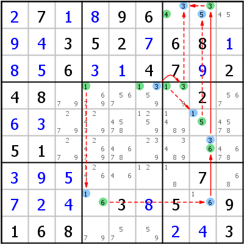 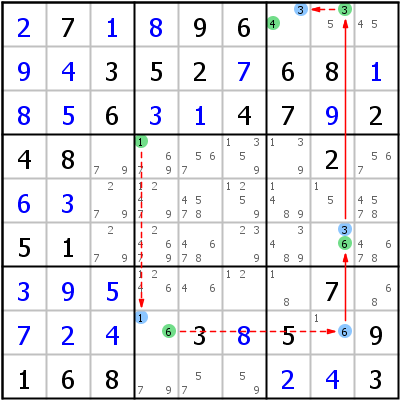 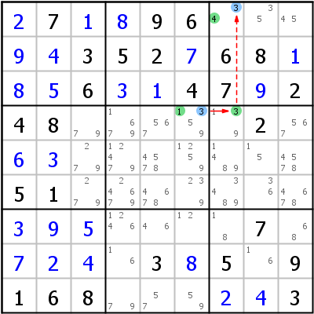 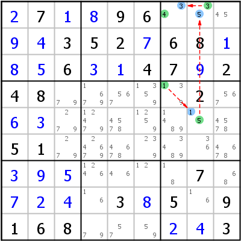Das Beispiel zeigt eine eher einfache Forcing Chain Verity, die beweist, dass r1c7 4 sein muss (das erste Bild zeigt alle Links auf ein Mal, die anderen drei Bilder zeigen die einzelnen Chains).
Forcing Chain Verity => r1c7=4
- r4c4=1 r8c4=6 r6c8=6 r1c8=3 r1c7=4
- r4c6=1 r4c7=3 r1c7=4
- r4c7=1 r5c8=5 r1c8=3 r1c7=4
Bedeutung: Für jede mögliche Platzierung der Ziffer 1 in Zeile 4 kann bewiesen werden, dass r1c7 4 sein muss. r1c7 muss daher wirklich 4 sein.
Für jede Forcing Chain Verity gibt es eine komplementäre Forcing Chain Contradiction. Die Contradiction für das obige Beispiel:
Forcing Chain Contradiction in r4 => r1c7=4
- r1c7<>4 r1c7=3 r1c8=5 r5c8=1 r8c4=1 r4c4<>1
- r1c7<>4 r1c7=3 r4c6=3 r4c6<>1
- r1c7<>4 r1c7=3 r1c8=5 r5c8=1 r4c7<>1
Bedeutung: Wenn r1c7 nicht 4 ist, kann Zeile 4 keine Ziffer 1 enthalten. Da das nicht erlaubt ist, muss die Annahme falsch sein, 4 kann in r1c7 platziert werden.
Forcing Net (Zwangsnetz)
Ein Forcing Net baut auf den gleichen Prinzipien auf wie eine Forcing Chain, nur als Net und nicht als Chain (siehe Chains versus Nets). Forcing Net ist eine Methode, die wirklich nur als letzter Ausweg verwendet werden sollte. Manuell können Forcing Nets nur von sehr erfahrenen Spielern gefunden werden (die Bilder für das Beispiel sprechen eine deutliche Sprache).
Notation: Die Verzweigungen des Netzes werden in Klammern gesetzt. Die Folgerungen werden später im Netz benötigt.
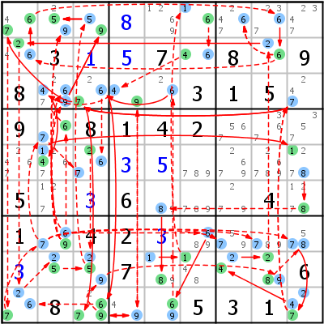 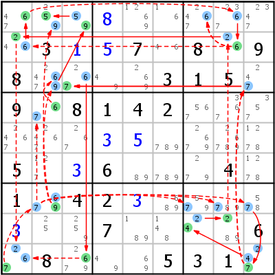 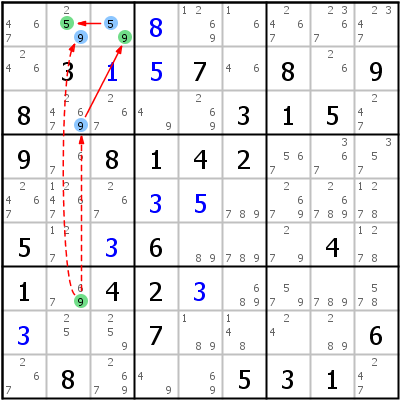
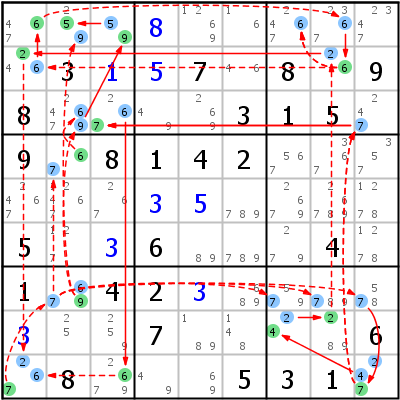 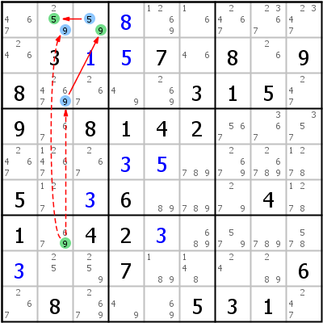 Das Beispiel ist eine Verity, die beweist, dass r1c2 5 sein muss.
Forcing Net Verity => r1c2=5
- r7c2=6 (r4c2=7 r5c3<>7) (r3c2<>6) r9c5=6 (r9c5<>9) (r9c5<>9) r3c3=6 (r5c3=2 r8c3<>2) (r1c1=7 r9c1=2 r8c2=5 r8c3=9 r8c8=8 r7c9<>8) r9c3=7 r9c4=9 r3c4=4 r5c2=4 r5c9=1 r6c9=8 r8c5=8 r8c6=1 r1c6=6 r2c6=4 r3c4=9 r9c3=9 r8c3=5 r1c2=5
- r7c2=7 (r7c2<>6) (r4c2=6 r3c2<>6) (r7c8<>7) (r7c7<>7) r9c9=7 (r3c3=7 r9c3=6 r9c1<>6) (r3c3=7 r3c3<>6) (r9c9<>2) r8c7=4 r8c8=2 r2c8=6 (r1c7<>6) r1c1=6 r2c8=6 (r1c7<>6) r2c1=2 r9c1=7 r7c2=9 (r1c2<>9) r1c3=9 r1c2=5
- r7c2=9 (r1c2<>9) r1c3=9 r1c2=5
Bedeutung: Zelle r7c2 hat nur drei Möglichkeiten übrig: 6, 7 und 9. Unabhängig davon, welche dieser Ziffern tatsächlich gesetzt werden wird, muss r1c2 immer 5 sein.
Betrachten wir das letzte (und einfachste) Netz: Wenn wir die Klammern erst einmal ignorieren, können wir der Chain normal folgen. Wenn r7c2 9 ist, kann r3c2 nicht 9 sein. Hier bleiben wir stecken. Wir können nicht fortfahren, weil 9 in r3c2 und r1c3 nur durch einen Weak Link verbunden ist. Glücklicherweise kann auch r1c2 nicht 9 sein, wenn r7c2 9 ist (der Zweig des Netzes), was den Weak Link in einen Strong Link umwandelt.
Dei Verzweigungen in den anderen Netzen können nicht so leicht erklärt werden. Versuchen Sie es ruhig einmal selbst.
Kraken Fish (Kraken)
Ein Kraken ist eine Kombination eines Fisches mit einer oder mehreren Chains. Er verwendet normalerweise Finned Fish, die keine Eliminierungen bewirken können, weil keine der möglichen Eliminierungen alle Fins sehen kann (siehe Fisch Allgemein).
Kraken Fish Type 1
In einem Finned Fish wird eine mögliche Eliminierung zu einer tatsächlichen, wenn sie alle Fins sehen kann. Leider ist das eher selten der Fall. Oft erhält man einen nutzlosen Finned Fish ohne Eliminierungen. Ein Kraken Fish kann auch aus solchen Fischen oft noch eine Eliminierung herausholen, indem er Chains verwendet.
Die Voraussetzung für einen Finned Fish war: Wenn alle Fins falsch sind, sind alle möglichen Eliminierungen gültig. Ist aber auch nur eine Fin gesetzt, wird der Fisch ungültig und die Platzierung eliminiert den Kandidaten aus allen Zellen, die die Fin sehen können.
Beim Kraken Fish wird dieses Prinzip einfach erweitert: Wenn wir beweisen können, dass eine mögliche Eliminierung für alle möglichen Fins auch falsch sein muss, können wir sie eliminieren. Für den Beweis verwenden wir Chains, die mit einem Weak Link in jeder Fin-Zelle beginnen und ebenfalls mit einem Weak Link in der Zelle mit der möglichen Eliminierung enden.


Das Beispiel ist vom selben Sudoku, in dem vorher das Forcing Net nötig wurde. Die Basis bildet ein Finned Franken X-Wing: 2 r6b2 c57 fr6c2 fr6c9. Mögliche Eliminierungen sind r158c7 (keine der drei sieht alle Fins).
Das linke Bild zeigt die erste Chain, die Fin r6c2 mit Zelle r8c7 verbindet: r6c2 -2- ALS:r4c2,r5c13 -4- r2c1 =4= r2c6 -4- r8c6 =4= r8c7. Das rechte Bild zeigt die zweite Chain für die zweite Fin (r6c9): r6c9 -2- ALS:r13479c9 -8- ALS:r8c238 -2- r8c7.
Bedeutung:
- Sind beide Fins falsch, ist der Fisch gültig und r1c7, r5c7 und r8c7 können eliminiert werden
- Ist Fin r6c2 wahr, kann 2 von r8c7 eliminiert werden (durch erste Chain bewiesen)
- Ist Fin r6c9 wahr, kann 2 von r8c7 eliminiert werden (durch zweite Chain bewiesen)
Das ist eine typische Verity.
Kraken Fish Type 2
Typ zwei ist ein bisschen komplizierter als Typ 1. Wiederholen wir, wie ein Fisch funktioniert: Ein Fisch garantiert, dass in jedem Cover-Set genau ein Basekandidat gesetzt ist.
Wenn wir Chains finden können, die jeweils mit einem Weak Link starten und von jedem Basekandidaten in einem der Cover-Sets (plus von jeder Fin, wenn nötig) alle zum gleichen Ergebnis führen, haben wir eine Forcing Chain Verity.
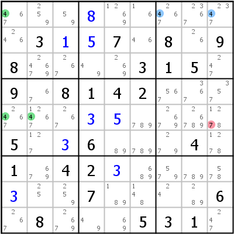 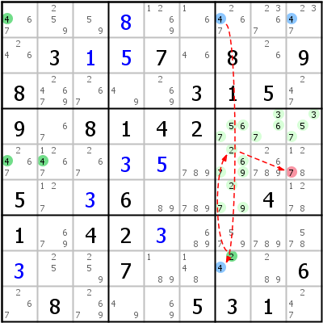 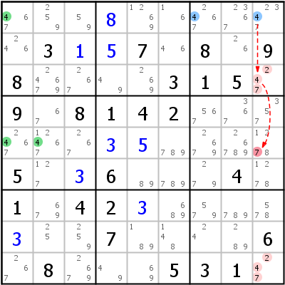 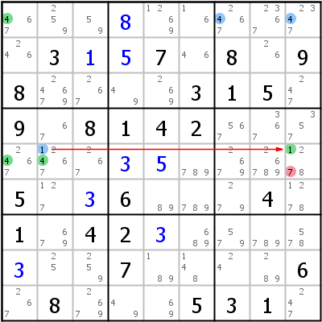Das Beispiel zeigt einen Kraken Fish, der auf einem Sashimi X-Wing beruht: 4 r15 c12 fr1c7 fr1c9. Was gut für uns ist, ist dass Cover-Set Spalte 2 nur einen Basekandidaten hat (r5c2). Die andere 4 in dieser Spalte (r3c2) ist ein Coverkandidat und interessiert uns hier nicht weiter. Wir können folgende Chains finden:
- r1c7 -4- r8c7 -2- ALS:r4c789,r56c7 -7- r5c9
- r1c9 -4- ALS:r39c9 -7- r5c9
- r5c2 =1= r5c9
Gemeinsam beweisen sie, dass r5c9 nicht 7 sein kann.
Brute Force (Rohe Gewalt)
Brute Force ist nicht wirklich eine Strategie: Wir platzieren eine Ziffer in einer Zelle und schauen, ob wir eine Lösung erhalten oder nicht. Wenn diese Methode aktiviert ist, kann jedes Sudoku gelöst werden.
Copyright © 2008-12 von Bernhard Hobiger
Zuletzt geändert am 5. Mai 2025 von shorty#3746
(basierend auf dem 1to9only Github-Repo)
Alles Material auf dieser Site unterliegt der GNU FDLv1.3.